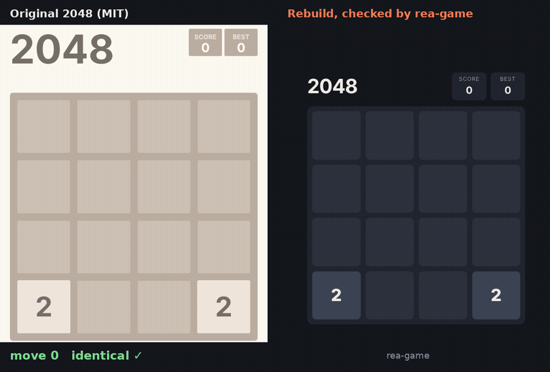
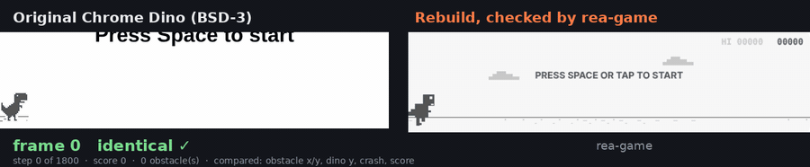
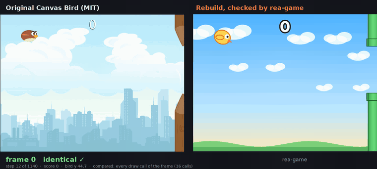
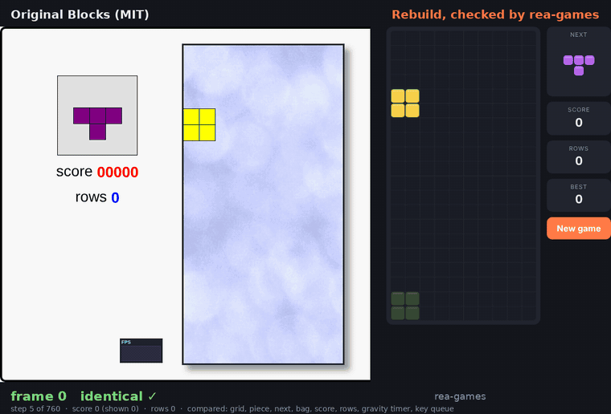
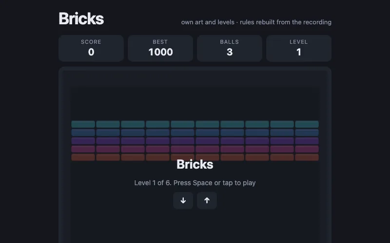
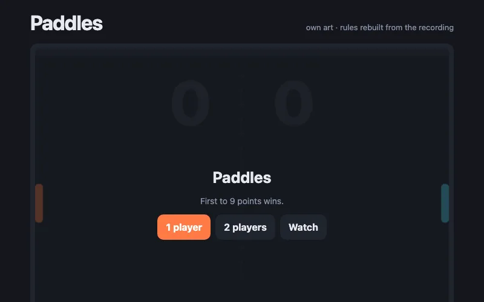

2048
19/19 cases identical · 24,044 inputs Original: gabrielecirulli/2048 (MIT) Play the rebuild
Dino
29/29 cases identical · 63,000 frames Original: Chrome's offline dinosaur (BSD-3) Play the rebuild
Canvas Bird
30/30 cases identical · 68,409 frames Original: giotiskl/Canvas-Bird (MIT) Play the rebuild
Blocks
36/36 cases identical · 104,208 frames Original: jakesgordon/javascript-tetris (MIT) Play the rebuild
Bricks
37/37 cases identical · 209,600 steps Original: jakesgordon/javascript-breakout (MIT) Play the rebuild